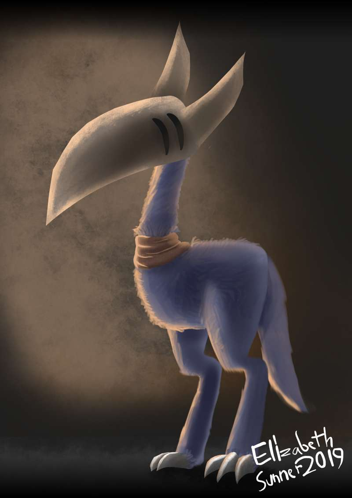

-------------------------------------------------------------------------------
The Ektol is a cute, and somewhat cuddly creature. It bares a beaked skull that seems to be hollow... And yet, its fur is nice and soft. This particular Ektol has a scarf, although the origins of it are unknown. It's friendly enough to people, just don't intentionally cause harm. Its legs are powerful, allowing it to run at great speeds... While the beak it has is sharp to the touch. Chances are, if you piss this thing off, you'll be absolutely brutalized.
When I first discovered this creature, it was eating. Ektols seem to have a long, thin tongue, that comes out of the tip of the beak. It then sucks the blood of whatever it's killed, which, in this case, was a Vosk. I'm assuming that it can survive on only blood, seeing as that's the only thing I've seen it consume.
The Ektol stands tall at around 8 feet. The sounds it makes are of the chirping/purring variety. I have a recording, although I don't know where it is at the moment. I'll keep you updated. And one last thing; I've met some people who have tamed these creatures, and keep them as companions. Not a whole lot of people, just two. This creature seems to generally be, as stated at the start, a "cute and somewhat cuddly creature."
-------------------------------------------------------------------------------